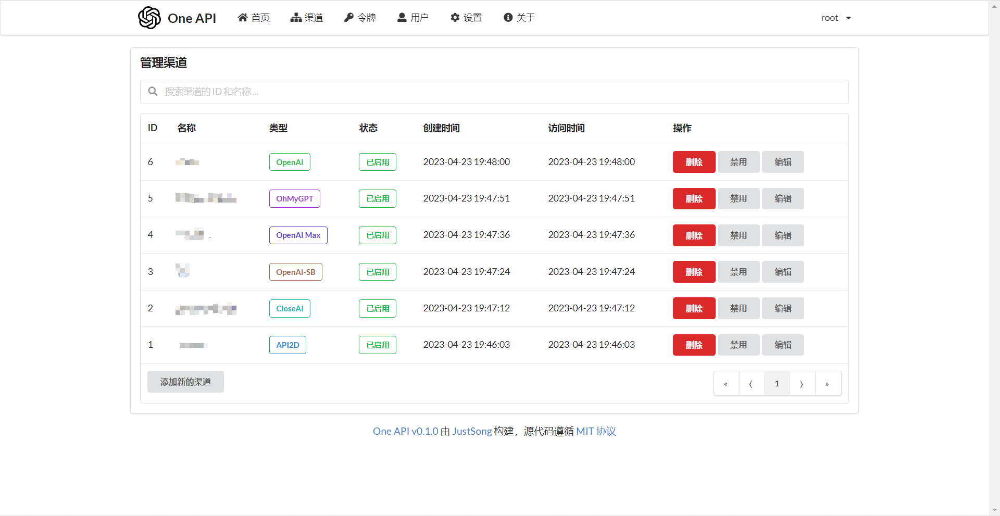
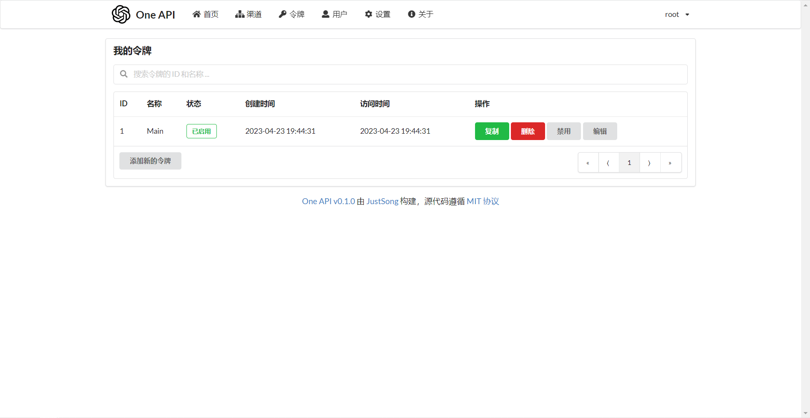

One-api
 项目首页
项目首页
一个大模型接口管理和分发系统，能够支持多种主流的AI模型接口，包括但不限于OpenAI、Azure、Anthropic Claude、Google PaLM系列、智谱ChatGLM、百度文心一言、讯飞星火认知、阿里通义千问、360智脑及腾讯混元等，实现了接口的整合与统一管理。


 如何部署在线 One-api
如何部署在线 One-api
什么是 One-api
- One-API 是 OpenAI 接口管理 & 分发系统，支持 Azure、Anthropic Claude、Google PaLM 2 & Gemini、智谱 ChatGLM、百度文心一言、讯飞星火认知、阿里通义千问、360 智脑以及腾讯混元，可用于二次分发管理 key，仅单可执行文件，已打包好 Docker 镜像，一键部署，开箱即用。
功能列表
- 多模型支持：它是一个大模型接口管理和分发系统，能够支持多种主流的AI模型接口，包括但不限于OpenAI、Azure、Anthropic Claude、Google PaLM系列、智谱ChatGLM、百度文心一言、讯飞星火认知、阿里通义千问、360智脑及腾讯混元等，实现了接口的整合与统一管理。
- 一键部署与开箱即用：通过Docker镜像形式，one-api可以实现快速部署，降低了使用门槛，使得用户能够迅速搭建起自己的API管理系统。
- API管理功能：包括文档自动生成、接口测试、版本控制、权限管理等，这些功能有助于提升API的开发效率与维护质量，确保API服务的稳定性和安全性。
- 高性能与轻量级：基于Go语言开发，确保了系统的高性能运行和资源的高效利用，适合微服务架构下的快速响应需求。
- 持续更新与发展：项目活跃，不断有新特性的加入和优化，如对响应解析逻辑的重构以支持多种格式，以及对新兴模型如GPT-4的计费方案的支持等。